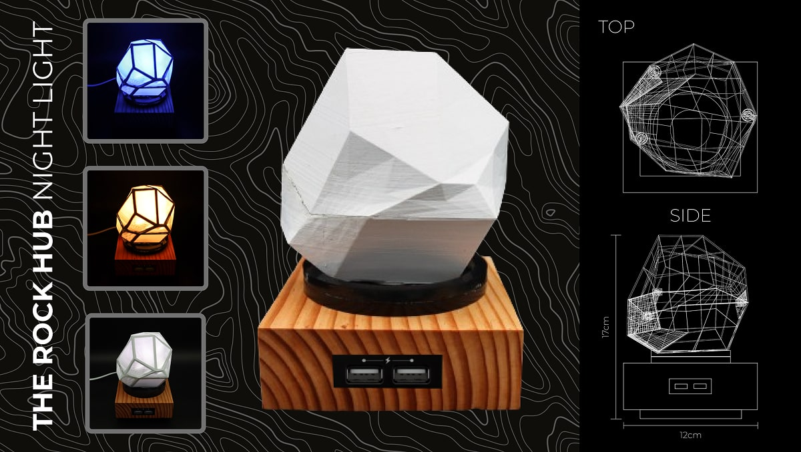
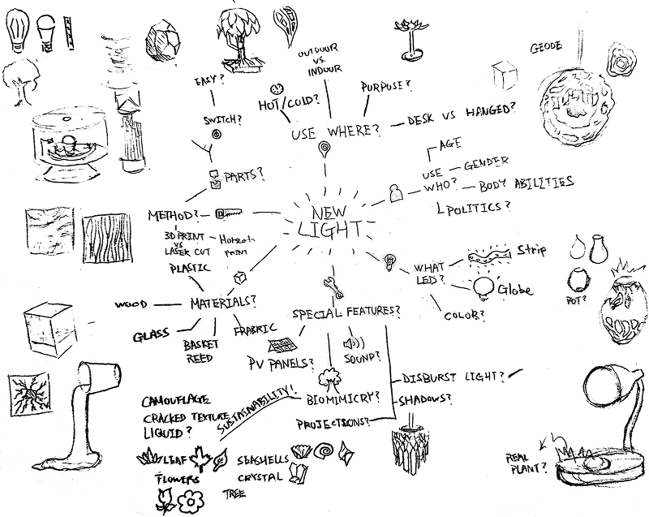
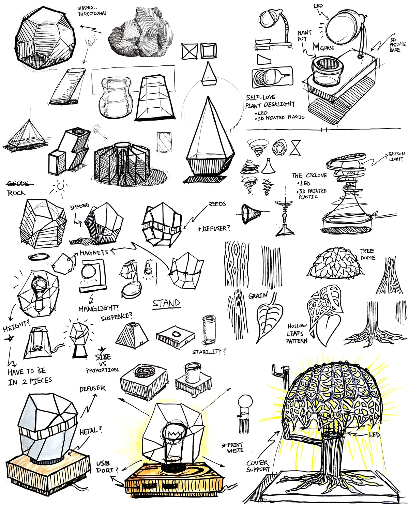
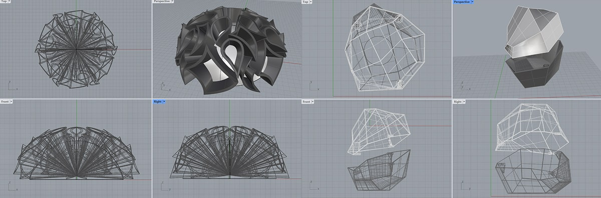
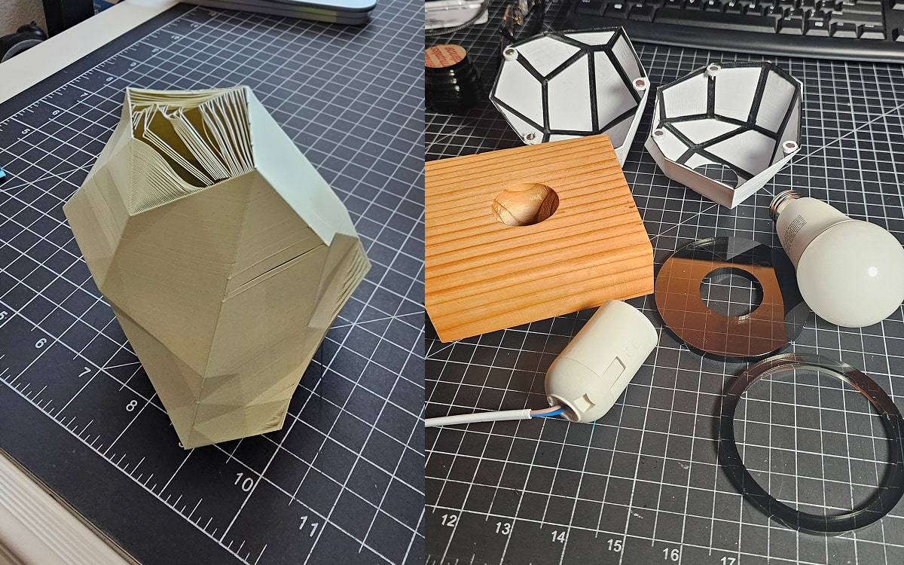
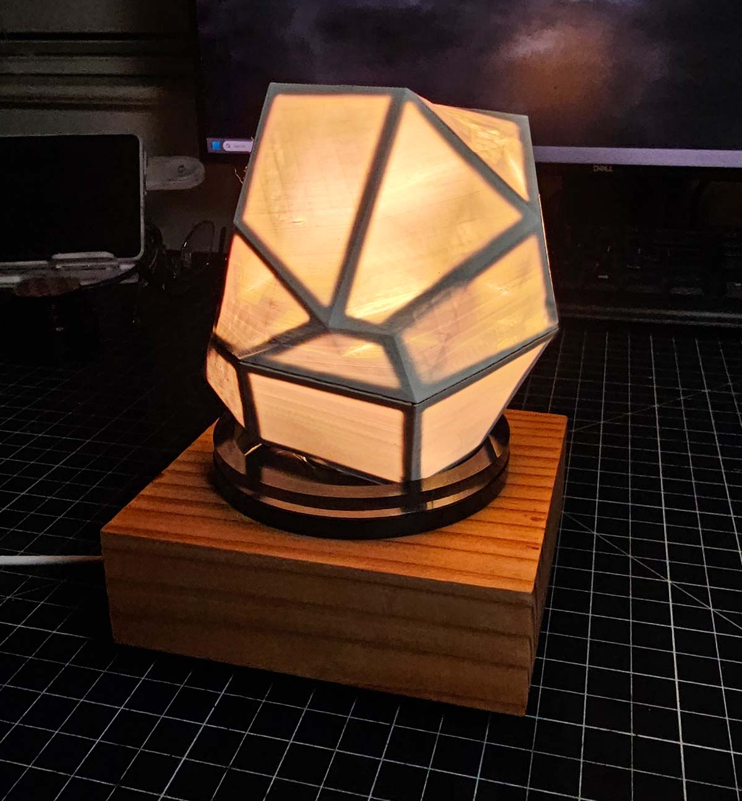

Experimental lighting design meets nature-inspired aesthetics
This rock-shaped LED night light prototype reflects a blend of digital fabrication and tactile craft, driven by a desire to reimagine ambient lighting through the lens of biomimicry and sustainable design. This project combines 3D printing, laser-cutting, and functional electronics.
The project began with a brainstorm mapping user demographics, materials, desired features, and possible forms.
Inspired by publications like Industry of Nature: Another Approach to Ecology, I explored biomimicry-based sketches. Two concepts emerged—a dome-shaped tree canopy and a rough-cut rock lamp. While both were modeled in Rhino, the dome geometry posed significant 3D printing challenges. I proceeded with the rock concept.
 Creating a hollow shell presented key challenges: if printed too thick, it would block light; too thin, and the structure became fragile or unprintable. I split the design into two interlocking halves and embedded magnets to ensure a clean closure. I also experimented with acrylic laser-cut spacers to elevate the shell above a wooden base for an elegant separation of materials.
This project challenged me to balance digital fabrication with natural inspiration. I learned how critical it is to prototype early, adapt based on material limitations, and troubleshoot creatively—especially with 3D printing constraints. Though I began with multiple concepts, the final geode-inspired nightlight not only reflects my aesthetic goals but also delivers a customizable, functional experience. It reaffirmed my interest in designing products that blend digital tools with a tactile, grounded form of craftsmanship.
